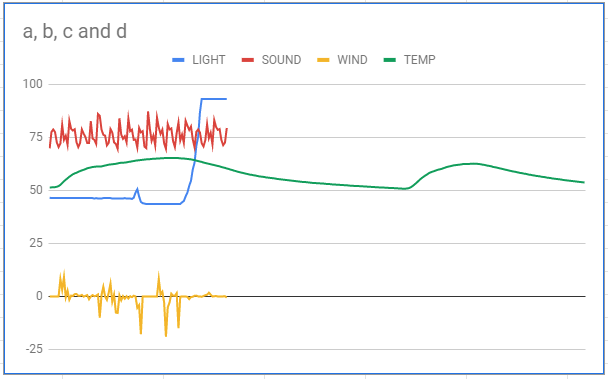
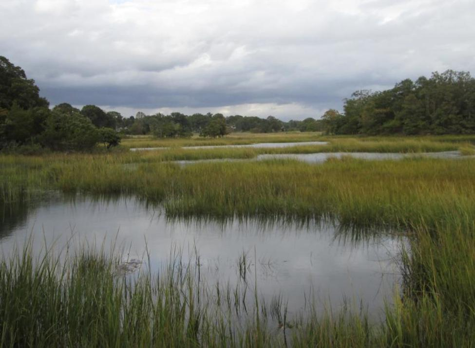

Shape Racing is a game where three different shapes continously race randomly. According to their respective place in the race, each shape goes to their corresponding podium. The first place podium is gold, second is silver, and third is bronze.
https://replit.com/join/vwqjyhfxcz-benholland47
Ping Pong Rainbow edition 1.2.5 Project
Ping Pong Rainbow Edition is a game in which two users play ping pong against eachother. When the ball collides with one of the paddles it changes colors at random. If the ball goes past one of the paddles the opposing player gets a point and the ball is sent back to the middle.
Pumpkin Clicker is a game where you click the pumpkin in the center of the screen to earn candy. Use candy to buy upgrades which help you get more candy faster. Goal is candy!!
Rover Project 3.1.6

Marshlands!

After comparing the data with our graphs, our group found the rover to be lost in the marshlands of the unknown alien planet. We found smooth constant temperature, low ambient light, constant differing sound, and little wind.